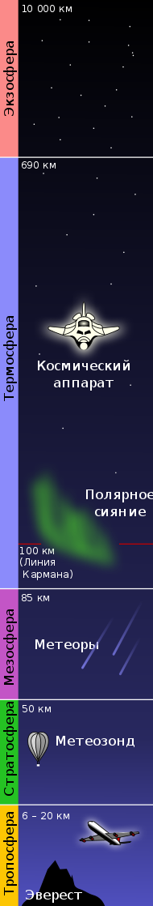
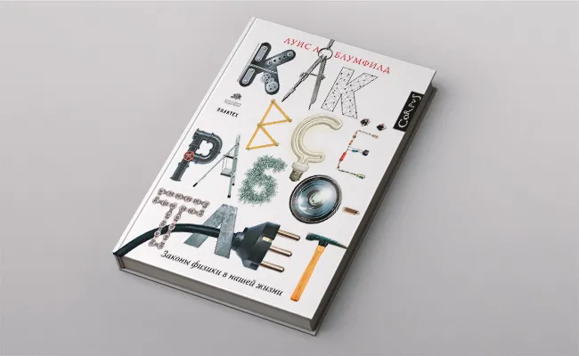

В конце октября издательство Corpus при поддержке Политехнического музея и «Книжных проектов Дмитрия Зимина» выпустит книгу физика Луиса Блумфилда «Как все работает. Законы физики в нашей жизни». Профессор Виргинского университета просто и ясно объясняет, почему горят лампочки и катится велосипед, как правильно поливать сад и как работают кухонные плиты. В начале декабря Луис Блумфилд приедет в Москву на книжную ярмарку Non/fiction, чтобы представить свою книгу. С разрешения издательства «Медуза» публикует фрагмент издания, объясняющий, почему летит ракета.
Несмотря на всю сложность конструкции современных космических кораблей, ракета — один из самых простых летательных аппаратов. В основе ее устройства лежит принцип, согласно которому всякое действие рождает противодействие. Ракета летит, выбрасывая определенное вещество из своей хвостовой части. Несмотря на всю эту простоту, ракеты разрабатывались и совершенствовались в течение более чем семисот лет. Ракеты используются в исследованиях космоса, в вооружениях, в спасательных операциях и развлечениях.
Среди самых впечатляющих свойств ракеты — ее способность обеспечивать собственное движение даже в полной пустоте космического пространства, а также достигать за счет этой реактивной силы потрясающе высоких скоростей. Каким-то образом ракета толкает сама себя без помощи внешних сил, и создается впечатление, будто этот толчок может сообщить ей сколь угодно большое ускорение. Разумеется, на самом деле ракета не может сама себя сдвинуть с места, так же как и вы не можете приподнять себя над землей за шнурки собственных ботинок, и ускорение ее имеет предел. В действительности ракета получает движущую реактивную силу, отталкиваясь от собственного топлива, а когда запас топлива иссякает, она перестает набирать скорость. Чтобы понять, как ракета извлекает реактивную силу из запаса топлива, давайте посмотрим, как работает третий закон Ньютона (тот самый, что описывает действие и противодействие) применительно к ракетам. Представьте себе, что вы сидите на льду посреди замерзшего пруда и ваши скорость и импульс равны нулю. Солнышко пригревает, и влажный лед очень скользкий. Похоже, как ни старайся, вам не удастся сдвинуться с места. Как же вам добраться до берега? Поскольку вы обладаете инерцией, то единственная надежда сдвинуться — это получить какой-нибудь толчок извне. Конечно, можно заказать по телефону пиццу, а когда ее доставят, оттолкнуться от разносчика. А можно вспомнить физические принципы, которые мы обсуждали на с. 68: снимайте кроссовку и бросайте ее изо всех сил в сторону восточного берега пруда. Бросая кроссовку, вы своей рукой прикладываете к ней силу. Кроссовка получает ускорение и летит надо льдом. А что происходит с вами? Вы перемещаетесь к западному берегу! Вы двигаетесь, потому что, когда вы толкнули кроссовку в восточном направлении, она с такой же силой толкнула вас к западу. При этом вы передали импульс кроссовке — и она тоже передала вам импульс, но направленный в противоположную сторону. Импульс не может возникнуть из ниоткуда и исчезнуть в никуда, он может быть лишь перераспределен. Даже после того, как вы бросили кроссовку, ваш суммарный импульс равен нулю. Величина импульса кроссовки равна величине вашего противоположно направленного импульса. Естественно, ваша масса намного больше массы кроссовки, поэтому вы двигаетесь гораздо медленнее, чем он. Импульс равен произведению массы на скорость, и чем больше масса тела, тем меньшая скорость ему нужна для получения такого же импульса. Так или иначе вы добились, чего хотели, — вы медленно скользите к западному берегу. Ваша конечная скорость имеет предел, потому что вам удалось сообщить кроссовке лишь небольшой импульс, и вы также получили от нее небольшой импульс, направленный в другую сторону. Если бы вам удалось метнуть ее с более высокой скоростью или запустить в воздух целый ящик с обувью, ваш импульс был бы куда больше и вы начали бы скользить быстрее. Однако швыряться кроссовками не слишком эффективно. Куда эффективнее было бы выпустить в сторону восточного берега быстрый поток газа. Даже при комнатной температуре скорость молекул в воздухе равна примерно 1800 км/ч. Если нагреть газ до 2800 ̊С — именно такова температура газа в жидкостном ракетном двигателе, — его молекулы будут двигаться втрое быстрее. Бросив что-либо с такой скоростью, вы получите изрядный по величине импульс, направленный в противоположную броску сторону. Этот процесс и реализуется в классическом ракетном двигателе (см. рис.). В результате химической реакции топливо превращается в сильно разогретый газ реактивной струи. Энергия, которая поначалу существовала в виде потенциальной энергии химического топлива, в разогретом и воспламенившемся газе превращается в тепловую (это главным образом кинетическая энергия хаотического движения крошечных молекул). Сопло ракетного двигателя направляет неупорядоченные перемещения молекул в одну сторону, и двигателю сообщается реактивная сила, направленная в противоположную сторону.

Молекулярная картина процесса в ракетном двигателе, который работает на химическом топливе. Топливо сгорает в камере двигателя, и из сопла выбрасывается реактивная газовая струя. Сопло превращает хаотическое тепловое движение молекул газа в упорядоченный поток, направленный от ракетного двигателя.
Если вам когда-нибудь доводилось наблюдать старт большой ракеты, вы, вероятно, заметили колоколообразные сопла, через которые выбрасываются газы. Каждое сопло направляет реактивную газовую струю назад и в результате позволяет ракете извлечь максимально возможный направленный вперед импульс и набрать максимально возможную скорость. Как мы увидим в главе 6, сопло позволяет газам преобразовать различные виды внутренней энергии в кинетическую энергию; сопло идеально подходит для того, чтобы направить поток и разогнать молекулы. Оптимальная форма сопла ракетного двигателя — это форма песочных часов. Такое сопло называется соплом Лаваля в честь его изобретателя — шведа Карла Густава де Лаваля. Для более полного понимания того, почему для сопла ракетного двигателя требуется столь сложная форма, необходимо изучить физику газовых потоков, скорость которых близка к скорости звука или превышает ее. Позже мы поговорим об этом подробнее, а пока нам достаточно будет кратко коснуться данной темы. Внутри ракеты, у входа в сопло Лаваля, горячий газ сильно сжат и находится под огромным давлением. Подобно газу из аэрозольного баллончика, раскаленный газ с ускорением вылетает из сопла в направлении области более низкого давления. Сужение сопла способствует росту ускорения до известного предела. Самую узкую часть сопла газ проходит со скоростью звука, и его свойства начинают кардинально меняться. Затем сопло расширяется, чтобы разогнать сверхзвуковую реактивную газовую струю еще сильнее. Здесь, в расширяющейся части колокола, исходный небольшой объем сильно сжатого газа увеличивается, и раскаленный газ уже подготовлен для того, чтобы выйти из сопла в окружающее пространство. Оптимальный (то есть обеспечивающий максимальную реактивную силу) диаметр внешней половины сопла Лаваля зависит от внешних условий. На небольшой высоте над уровнем моря струя газа выходит в воздух, находящийся под нормальным атмосферным давлением, и в этом случае лучше всего подходит относительно узкое сопло. В стратосфере и в космосе газы выходят в разреженную среду или в вакуум, поэтому требуется более широкое сопло. Как правило, конструкторы находят некое компромиссное решение, чтобы сопло подходило и для тех, и для других условий. К моменту выхода из сопла исходная энергия газа почти полностью переходит в кинетическую, а скорость газового потока направлена прочь от сопла. Однако поскольку газ продолжает гореть даже после выброса из сопла, его кинетическая энергия и скорость растут до фантастических величин. Благодаря конструкции сопла Лаваля скорость истечения реактивной газовой струи — то есть скорость направленного назад потока газов, выходящего из двигателя ракеты, — достигает значений от 10 000 до 16 000 км/ч. Ракета выбрасывает реактивную струю назад и сообщает ей направленный назад импульс. Реактивная газовая струя посылает ракету вперед и тем самым замыкает процесс передачи импульса. Все, что требуется для получения реактивной движущей силы, — это собственно выброс газов; ракете не нужно отталкиваться от какого-либо другого тела, и она отлично летит даже в полной пустоте. «Оттолкнувшись» с достаточной силой от собственного выброса, ракета не только компенсирует собственный вес, но и поднимается с ускорением. В момент старта космический челнок вместе с топливным баком весит около 20 000 000 Н, а реактивная сила равна примерно 30 000 000 Н. Это означает, что шаттл может двигаться вверх с ускорением вдвое меньшим, чем ускорение свободного падения! По мере того как корабль сжигает свое топливо и его вес и масса уменьшаются, он устремляется ввысь все быстрее. Распространенное заблуждение: действие и противодействие в ракетах Заблуждение: Чтобы начать движение, ракета должна оказать противодействие некоему постороннему телу. На самом деле: Поскольку движение ракеты предполагает действие двух равных и противоположно направленных сил — действия и противодействия, ракета выталкивает назад реактивную газовую струю (действие), а реактивная струя толкает ракету (противодействие). Если струя газов и ударяется во что-либо после выхода из сопла, это не имеет отношения к реактивному движению ракеты.
Пока ракета рассекает слои атмосферы, ей лучше всего лететь носом вперед. Даже птица, которая вдруг полетит хвостом вперед, будет выглядеть довольно глупо, но потерявшая стабилизацию ракета к тому же чрезвычайно опасна. Чтобы сохранить правильную ориентацию, ракета должна обладать динамической вращательной устойчивостью. Немало ракет было дистанционно уничтожено вскоре после запуска, поскольку они потеряли динамическую устойчивость и стали беспорядочно кувыркаться в воздухе. Ракета динамически устойчива, если суммарный момент приложенных к ней сил относительно ее центра масс равен нулю при ее ориентации носом вперед. При любом отклонении от этого положения она должна возвращаться к нему. Любые моменты сил должны либо вновь и вновь разворачивать ракету носом вперед, либо они должны быть пренебрежимо малы. Ракетный конструктор обязан принять во внимание две причины возникновения моментов сил. Во-первых, силу тяги двигателя. Расположенный в задней части ракеты двигатель толкает ракету вперед, и потенциально это может иметь неприятные последствия. В конце концов, даже обычную тележку легче направить в нужную сторону, если тянуть ее спереди, а не толкать сзади. Для того чтобы ракета постоянно была ориентирована носом вперед, двигатель должен создавать силу тяги, направленную точно к центру масс, — тогда на ракету не действует момент силы. Если один из двигателей не совсем точно ориентирован, его тяга может создать момент силы, который начнет закручивать взлетающую ракету. Моменты сил, возникающие из-за смещения двигателя, — одна из самых распространенных причин крушения современных ракет. Сбой в работе самого двигателя или его системы управления может привести к тому, что ракета выйдет из-под контроля. Во-вторых, на ракету, пока она находится в атмосфере, могут действовать моменты аэродинамических сил. Аэродинамику мы будем изучать в 6-й главе, а пока достаточно сказать, что обтекающий ракету воздушный поток помогает ракете лететь носом вперед при условии, что сопротивление воздуха у ее хвостовой части больше, чем спереди. В этом случае аэродинамические силы приложены к хвосту ракеты позади центра масс и направляют ее носом вперед. Устойчивость простейшей ракеты обеспечивается исключительно аэродинамикой. Хвостовое оперение ракеты способствует формированию аэродинамических сил, которые удерживают ее хвост сзади. Сопла двигателей тоже тщательно выровнены так, чтобы реактивная газовая струя не создавала момента силы относительно центра масс ракеты. Такая ракета летит по прямой, но ею трудно управлять. У современных высокотехнологичных ракет хвостового оперения нет, они стабилизируются за счет реактивных сил. Такие ракеты умеют контролировать собственную ориентацию и поворачивать сопла двигателей таким образом, чтобы скорректировать траекторию. Кроме того, на корпусе таких ракет имеются дополнительные небольшие рулевые двигатели, которые создают моменты сил и поддерживают правильную ориентацию ракеты. Большинство современных ракет-носителей вообще не имеют стабилизаторов. Их устойчивость и маневренность полностью обеспечивают находящиеся под постоянным контролем двигатели. То, что коррекция траектории полета осуществляется исключительно с помощью реактивной газовой струи, становится принципиально важным, когда космический аппарат покидает атмосферу Земли. В безвоздушном пространстве, где не возникают моменты аэродинамических сил, полет корабля направляется лишь специальными рулевыми двигателями, которые короткими выбросами реактивных газовых струй поворачивают корабль в нужном направлении. Крылья и хвостовое оперение нужны космическому челноку лишь при возвращении на Землю, когда он начинает планировать в атмосфере. На орбите ни крылья, ни хвост не работают, потому что там нет воздуха, от которого они могли бы оттолкнуться. Однако любой уважающий себя командир космического экипажа хочет, чтобы его корабль выглядел как можно более элегантно — уж не хуже, чем звездолеты, которые нам показывают в блокбастерах. Космические летательные аппараты в кино почти всегда украшены совершенно бесполезными в космическом пространстве хвостовым оперением и крыльями. И когда вы в очередной раз увидите на экране межгалактический крейсер с элегантными крыльями и хвостом, не забывайте, что ничуть не менее эффективным будет звездолет, похожий, скажем, на гигантский и неуклюжий школьный автобус.